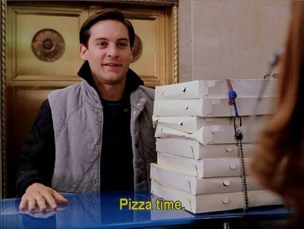

This dish not for you? We don't blame you!
Pizza Pizza!

Let's learn to make a pizza that'll put "Joe's Pizza" out of buisness!
Prep Time: 20 min Cook Time 30 min Serves: 6 people
Ingredients:
- Pizza Sauce
- 1 tbsp Olive Oil
- 14oz packadge of refrigirated pizza dough.
- 1 pound loq-moisture mozzarella cheese
- 3 1/2 ounces thick pepperoni slices
Steps:
- Heat olive oil in a pan over medium-high heat. Add tomato paste, garlic powder, onion powder, red pepper flakes, basil, oregano, salt, and sugar. Saute until the tomato paste starts to caramelize on the bottom of the pan, 3 to 4 minutes.
- Pour in water and whisk to combine; bring to a simmer. Lower the heat to medium and cook, stirring occasionally, until the sauce reduces to your desired thickness. Turn off the heat and reserve until needed.
- Preheat the oven to 500 degrees F (260 degrees C). Generously grease a sheet pan with olive oil, rubbing some on your fingers as well.
- Press, stretch, and pull pizza dough until it fills the prepared pan, going all the way to the corners. If the dough stops stretching, let it rest for 5 minutes before resuming.
- Top dough with cooled sauce, spreading all the way to the edges of the pan. Sprinkle on mozzarella cheese and add pepperoni. Place the pan on the stove over a high flame, and slowly move it around to evenly apply the heat, until you hear it starting to sizzle, about 1 minute.
- Transfer into the lower center of the preheated oven and bake until cheese is beautifully browned and pepperoni is charred, about 20 minutes. Slice and serve.
- Let Pizza Hut know their time has come!